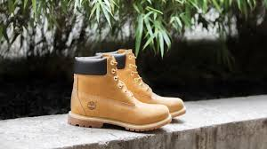
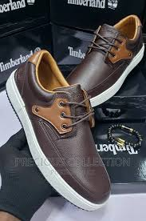
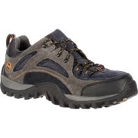
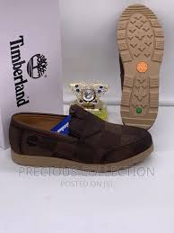
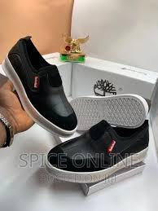
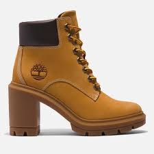

RELIABLE & COMFORTABLE SHOES
TIMBER LAND
These shoes are crafted to withstand the toughest conditions, from rain-soaked streets to rugged terrain. Not only are they durable and waterproof, but they also exude a sense of style that is unmatched.Our iconic Timberland Yellow Boot is made from nubuck leather, but we use a variety of different materials to ensure each pair of Timberland boots does its job correctly. Most of our uppers are made of leather, which can be hard-wearing full-grain, stylish suede, or best-of-both nubuck.
At Timberland, we aim to only work with leather sourced from LWG silver or gold-rated tanneries, which follow environmental best practices. With high-quality inners, soles and binding, our boots become the comfortable, dry and stylish footwear that’s popular the world over.
    
PROPERTIES OF TIMBER LAND
- Density
- colour
- hardness
- waterproof
- Elasciticy
- Appearance
- soundness
- Grain
shoe 2